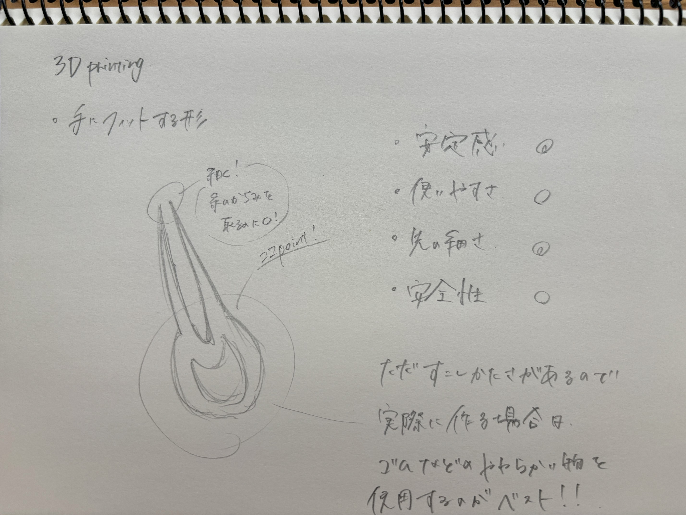
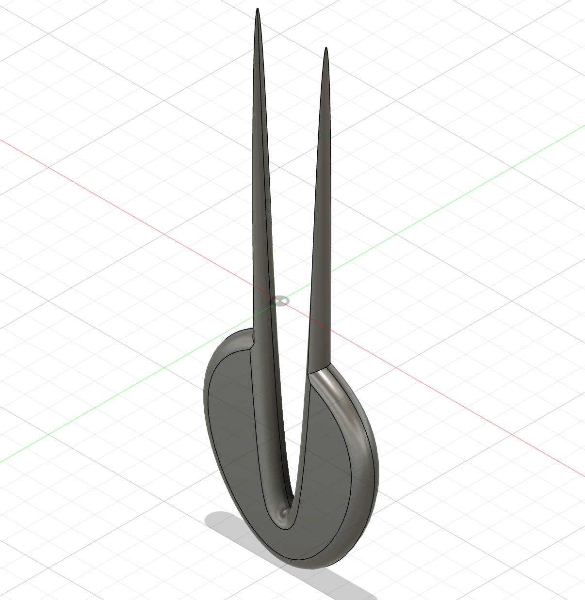

<!DOCTYPE html>
<html lang="jp"></html>
<head>
    <title>第1回3Dprinying</title>
</head>
<body>
    <h1>3Dprinting</h1>
    <h2>手にフィットするピンセット</h2>
    <h3>構想段階のスケッチ</h3>
    <br>
    <h4>作品の説明</h4>
    <div>
        先端が細く、手にフィットするピンセット！
    </div>
    <div>
        持ち手の部分の厚さが、大体5㎜、先端の部分が1.5㎜
    </div>
    <div>
        安定性・使いやすさ・先の細さ・安全性を考慮
    </div>
    <h3>デザイン</h3>
    <br>
    <h3>完成品</h3>
    <br>
    
    <h4>作成理由と改良点</h4>
    <div>
        ズボンなどの紐や、靴紐など、固く結んでしまった時、爪だと痛くなってしまうので、
    </div>
    <div>
        固くて先端の細いものがあると良いと思い、作ることにしました。
    </div>
    <div>
        そして、私は手が大きいほうなので、フィット感のあるものにしたいと考えました。
    </div>
    <div>
        実際に作ってみて、持ち手の部分をゴム製のものにしたり、子供でも扱えるよう
    </div>
    <div>
        安全性の高い素材に変え、先端も丸く作れば、もっと良くなるのではと思いました。
    </div>
    <link rel="stylesheet"href="./css/style.css">
    <a href="https://a360.co/4eJElq7"taregt="_blank">統計ファイル</a><br>
    <h3>作成段階で参考にした資料</h3>
    <iframe width="iframe width="560" height="315" src="https://www.youtube.com/embed/videoseries?si=Re4bojbAuYdNJyOX&amp;list=PLEmSRK6wIlJywRTsU1t3BlTr_108xlGNB" title="YouTube video player" frameborder="0" allow="accelerometer; autoplay; clipboard-write; encrypted-media; gyroscope; picture-in-picture; web-share" referrerpolicy="strict-origin-when-cross-origin" allowfullscreen></iframe>"


</body>